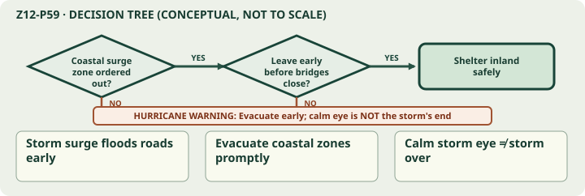

Z12-P59 · Extreme environments · New manuscript
Obey hurricane storm-surge evacuations and never shelter in low coastal zones
Leave coastal surge zones early before rising ocean water, bridge closures and violent winds trap residents or travelers.
When it applies · Atlantic, Gulf and coastal regions under Tropical Storm or Hurricane Watches and Warnings.
Equipment · Hurricane evacuation route map, fueled vehicle, 3+ day emergency kit, medications and alert receivers.

Actions
- Recognize that storm surge (ocean water pushed rapidly onshore by hurricane winds) and inland freshwater flooding cause the majority of hurricane deaths—NOT wind alone—and surge floods low coastal roads hours before peak winds arrive.[X17, T13]
- Obey official coastal evacuation orders EARLY when zones are called, leaving barrier islands, low floodplains, mobile homes and anchored boats long before causeways close or winds topple trees.[X17, T13, E17]
- Never mistake the calm, clearing sky of a hurricane's eye for the end of the storm—violent winds return rapidly from the opposite direction within minutes to an hour.[X17]
Failure recognition · Trying to ride out a coastal Hurricane Warning in a beachfront cottage or boat, or stepping outside into downed power lines during the calm eye.[X17, T13]
Verify · Confirm your evacuation zone, inland destination, stocked go-bag and redundant NOAA Weather Radio/WEA alerts before storm season.[X17, T13, T14, ED]
Stop or change course · Once official evacuation orders issue for your coastal zone, depart immediately along open designated routes; if trapped late, move to the highest safe interior refuge away from storm surge and follow 911/official guidance.[X17, T13, E24]
Evidence and editorial notes
- E17 · NWS · Tornado Safety (current web edition)
- Section: Tornado Safety > Staying Safe During a Tornado · Conditions: Tornado warning in camp, vehicle, or building
Support: Move to an interior lower-level room of a sturdy building if reachable; tents, mobile structures, and highway overpasses are unsafe; if caught outdoors with no sturdy shelter, monitor alerts early and follow NWS last-resort guidance.
Limitations: No outdoor improvised shelter is tornado-safe. · Conflicting evidence: None; reinforces early forecast withdrawal before severe storms arrive.
Editorial note: Establishes severe-storm abandonment threshold for camp shelters. · Specialist reviewer: Emergency management and meteorology
Primary source · checked 2026-11-24 - E24 · FEMA / Ready.gov · Shelter (current web edition)
- Section: Shelter > Sheltering in Place and Emergency Shelter · Conditions: Hazardous weather, outdoor smoke, or chemical/utility emergencies
Support: Choose shelter type to match the specific hazard: lowest interior room for wind/tornado, sealed interior room for outdoor hazardous-material alerts, or high ground for flood.
Limitations: Sealing a room for short-term chemical alerts requires following official duration orders to avoid CO/air-quality hazards. · Conflicting evidence: None; links household and outdoor shelter decision logic.
Editorial note: Bridges Z02 shelter selection with emergency-management hazard classes. · Specialist reviewer: Emergency management and shelter safety
Primary source · checked 2026-11-24 - T13 · FEMA / Ready.gov · Evacuation (current web edition)
- Section: Evacuation > Before, During, and After Evacuation · Conditions: Developing wildfire, flood, storm, or infrastructure emergency
Support: Identify multiple exit routes ahead of time, keep essential go-bags and fuel ready, leave promptly when authorities order evacuation, and do not return until officials declare the area safe.
Limitations: Late departure can trap groups behind road closures, smoke, or rising water. · Conflicting evidence: None; pairs with NWS-FLOOD and READY-WILDFIRE.
Editorial note: Establishes clear leave-early decision thresholds for multi-hazard scenarios. · Specialist reviewer: Emergency management
Primary source · checked 2026-11-24 - T14 · FEMA / Ready.gov · Emergency Alerts (current web edition)
- Section: Emergency Alerts > WEA, EAS, and NOAA Weather Radio · Conditions: Receiving time-critical hazard warnings at home or outdoors
Support: Use multiple redundant alert channels—Wireless Emergency Alerts, local opt-in alerts, and battery/crank NOAA Weather Radio—so a single dead phone or tower outage does not eliminate warning reception.
Limitations: Backcountry terrain can block both cellular and VHF weather radio reception. · Conflicting evidence: None; aligns with NOAA-NWR.
Editorial note: Grounds emergency warning redundancy in Z01 communication cards. · Specialist reviewer: Emergency management and communications
Primary source · checked 2026-11-24 - X17 · NWS · Hurricane Safety (current web edition)
- Section: Hurricane Safety > Storm Surge, Coastal Flooding and Inland Wind · Conditions: Tropical storms and hurricanes impacting coastal and near-coastal zones
Support: Storm surge and inland rainfall flooding are the deadliest hurricane hazards; obey coastal evacuation orders early, never shelter in low coastal zones or boats and treat calm storm eyes as temporary pauses before violent winds reverse.
Limitations: Hazardous rip currents and swell arrive hundreds of miles ahead of landfall. · Conflicting evidence: None; aligns with READY-EVAC and T13.
Editorial note: Grounds coastal storm-surge and hurricane evacuation cards in Z12. · Specialist reviewer: Emergency management and marine meteorology
Primary source · checked 2026-11-24
Source lineage · NWS hurricane safety and Ready.gov evacuation; new manuscript · Classification · New manuscript.